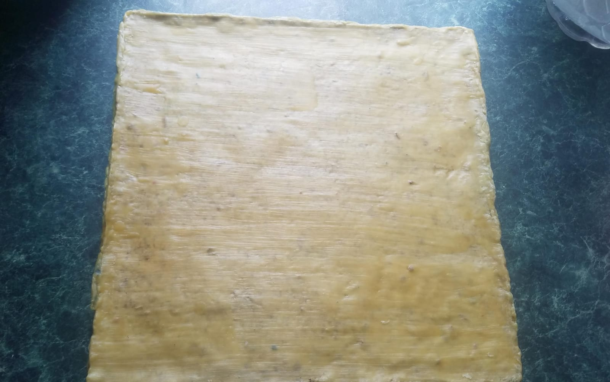

Transformando residuos en soluciones tangibles.
BioAse Tile fabrica losetas ecológicas a partir de aserrín, pulpa de papel reciclado y bioplástico natural. Una alternativa real al concreto y la cerámica — hecha en Nuevo Progreso, Tamaulipas, con materiales que la naturaleza ya nos dio.
materiales
reciclados
· y biodegradables ·
Cada kilo de aserrín que llega al basurero es una promesa rota de la naturaleza. Nosotros la recogemos, la mezclamos con baba de nopal, fécula de maíz y agua, y la devolvemos al mundo convertida en algo que perdura.
Un emprendimiento que transforma la idea de construir.
BioAse Tile nace como respuesta a dos problemas simultáneos: el alto impacto ambiental de los materiales tradicionales como el concreto y la cerámica, y la enorme acumulación de residuos orgánicos que terminan en rellenos sanitarios sin ser aprovechados.
Nuestra propuesta combina aserrín, pulpa de papel reciclado, fibras de cáscara de fruta y un bioplástico natural elaborado con fécula de maíz y baba de nopal. El resultado: losetas ligeras, resistentes, y con una estética artesanal única.
Somos un emprendimiento con cuatro dimensiones que conviven en cada loseta producida.

◆ Producto realLoseta ecológica
Loseta fabricada integralmente con residuos orgánicos y materiales reciclados. Acabado granulado natural, sellada con cera de abeja, ideal para jardines y espacios sociales.
- Material Aserrín + bioplástico natural
- Acabado Granulado natural, tonos profundos
- Peso Ligera · fácil de instalar
- Sellado Cera de abeja + aceite vegetal
- Curado 5 a 7 días al aire libre
- Ideal para Jardines, áreas peatonales, terrazas, escuelas
Naturaleza pura, nada más.
Cada loseta, una receta.
Aserrín
Subproducto de carpinterías locales. Aporta cuerpo, textura y absorción. Tratado con cal para eliminar microorganismos antes de mezclarse.
Pulpa de papel
Da estructura interna y reduce el peso.
Fibra de fruta
Refuerzo natural contra fracturas.
Fécula + nopal
Gel natural de fécula de maíz, vinagre, glicerina y baba de nopal. Reemplaza al plástico convencional.
Cera de abeja & aceite
Doble capa de sellado natural aplicada en caliente. Protege contra humedad, hongos y desgaste — sin químicos sintéticos.
De la cáscara
a la loseta terminada.
Tratamiento de materiales
El aserrín y las fibras de cáscara de fruta se sumergen en agua con cal durante 12 a 24 horas para eliminar microorganismos y mejorar la durabilidad. Luego se escurren y se secan al sol.
Bioplástico natural
Se cocina fécula de maíz con agua, vinagre, glicerina y sal hasta formar un gel espeso. Al final se incorpora baba de nopal, que mejora la adhesión y elasticidad del biocompuesto.
Mezcla del biocompuesto
Se combinan los sólidos secos con el bioplástico caliente. Se trabaja la mezcla hasta lograr una masa uniforme, espesa y moldeable. Aquí nace la loseta.
Moldeado y compactación
La mezcla se vacía en el molde y se compacta con fuerza para eliminar burbujas de aire. La compactación define la resistencia final de la pieza.
Secado y curado controlado
La loseta se coloca sobre una rejilla, en un lugar ventilado y con sombra. Se voltea cada 12 horas durante los primeros 3 días para secado uniforme.
Prevención de humedad
Se aplica una mezcla 1:1 de agua y vinagre sobre la superficie para inhibir el crecimiento de hongos durante el resto del secado.
Impermeabilización final
Se aplica una capa caliente de cera de abeja derretida con aceite vegetal, se deja reposar 12 horas, y se aplica una segunda capa. La loseta queda lista para enfrentar el clima.
Bonito por fuera.
Responsable por dentro.
Aserrín, pulpa de papel y fibras de fruta rescatados del desperdicio.
El bioplástico de fécula de maíz reemplaza por completo al sintético.
Aserrín, pulpa, fibras, fécula, vinagre, sal, glicerina, nopal, cera, aceite, agua.
Sin hornos industriales, sin químicos. Solo aire, tiempo y atención.
Lo que somos, lo que seremos.
Fortalezas
- Producto 100% ecológico, hecho con materiales reciclados
- Bajo costo de producción frente a la loseta tradicional
- Proceso accesible y adaptable a producción artesanal
- Ligera, fácil de transportar e instalar
- Genera conciencia ambiental en la comunidad
Oportunidades
- Crecimiento del mercado de productos ecológicos
- Expansión potencial a escuelas y espacios públicos
- Alianzas con carpinterías, recicladoras y constructoras
- Posicionamiento como referente local de innovación
- Tendencia mundial hacia la reutilización de residuos
Debilidades
- Tiempo de curado más largo que productos industriales
- Producción inicial limitada
- Falta de maquinaria industrial especializada
- Necesita pruebas constantes para mejorar resistencia
- Posible desconocimiento del producto en el mercado
Amenazas
- Competencia con concreto y cerámica ya posicionados
- Variación en precio de materias primas
- Condiciones climáticas que afectan el secado
- Posible aparición de competidores ecológicos
Nueve semanas, nueve etapas.
Imágenes del proceso.
Hablemos.
Construyamos juntos.
¿Te interesa conocer más del proyecto? Síguenos y escríbenos a través de nuestras redes sociales.